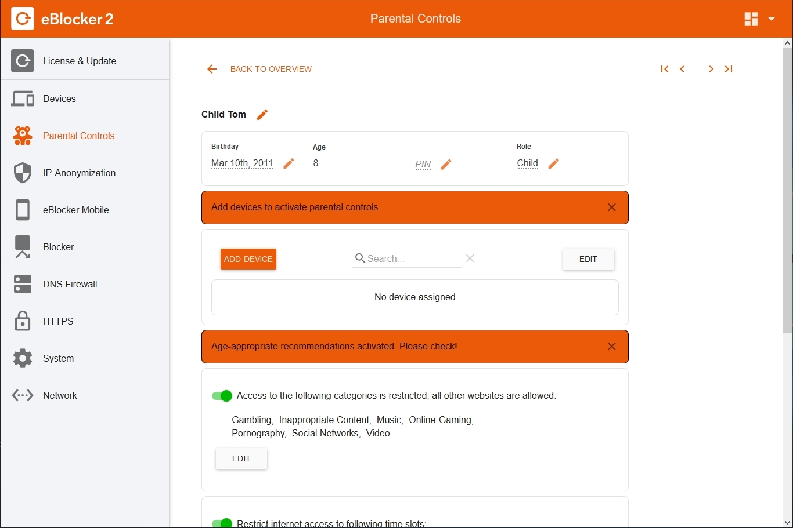
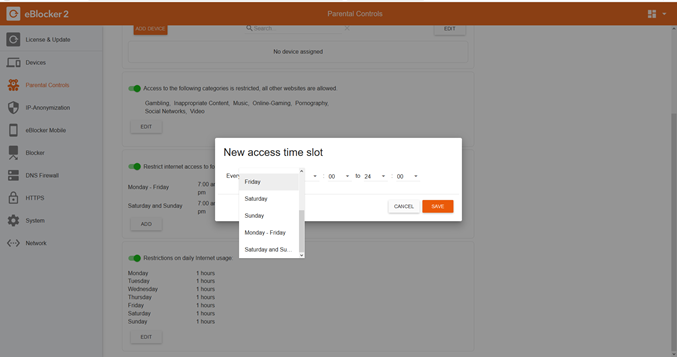
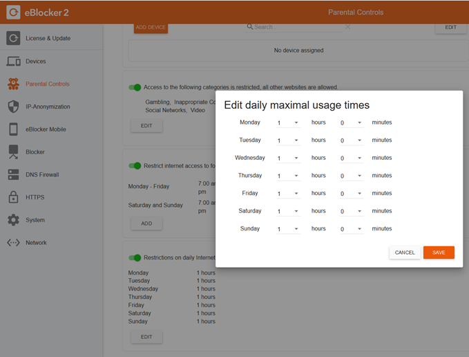

eBlocker Help > Knowledge Base > Use cases
To use parental controls, a password for the eBlocker administrator has to be set. Nobody but the administrator can access the eBlocker settings and disable the parental controls.
You can set the administrator password in "eBlocker Settings > System" on the "Admin Password" tab.
Navigate to the menu "eBlocker Settings > Parental Controls".
Since eBlocker OS 2.3.2 all restrictions are set as part of the user attributes. There are no separate profile settings any more.
Create a user
Settings > Parental Controls > Users
First create a new user by clicking on the New User button. Enter a name and select the major role of the new user. When adding a child you will be asked to enter it’s birthday. Therefore age-appropriate recommendations will be activated by default. After the New User Dialog is closed by clicking on save the User Details Settings page is opened.
User Detail Settings
Settings > Parental Control > Users > User Details
All details marked with the pen icon can be altered by clicking on the pen.
In the first section of the User Details page you can change the basic information on the user. You can now define both the basic user data, such as date of birth, role and also an optional PIN up to 16 digits long for this user. If a device is protected by the eBlocker Parental Controls, this PIN must be entered when the user changes. The age is displayed according to the entered birthday.

Assign all devices that are also used by children, teenagers and guests to them by clicking the Add Device button to open a corresponding dialog box for selecting the device(s). You can use Edit to remove one or more devices from the table.
Select the Add Device button to assign a device to the user you are editing. A corresponding dialog box for selecting the device(s) will appear.
Only one user can be assigned to a device at a time. A user, on the other hand, can be assigned to several devices - e.g. all devices of a child. The device can still be used by others as they take over responsibility with their PIN.
Devices that have not been assigned to a user are not subject to parental controls and are listed under other devices). Global protection is possible for these cases.
Blocking websites of certain categories
To avoid having to enter every unwanted website individually, eBlocker provides you with categories of web pages. Categories can be locked for each individual user.
To select specific categories for a profile now, activate the "Access to the following websites is prohibited" slide button and click on the categories to be blocked.
If you move the mouse over the list of categories, a tooltip will inform you about the content of the categories. The individual categories are automatically updated with the regular eBlocker updates at night.
You are able to define categories as exceptions, e.g. for the fragFinn search engine.
Please mind to save these settings.

Calls to websites and connection calls to apps that are subject to these restrictions are now blocked by eBlocker on all devices assigned to this profile. Instead of the desired website, a corresponding message appears in the browser.
Set access times
If you want your children to keep some time free for real life friends, homework or other activities then you can grant them internet access only in certain time intervals. Just activate the second slide switch so times are restricted. You can add new access time slots here or change them by use of the pencil symbol. With the “-“ the entry will be deleted immediately. Please mind to save these settings.

If you define time limits, no Internet connections will be allowed from the assigned devices outside the allowed times. The eBlocker will then display a corresponding message on the device.

Attention: If no time period is specified, Internet access is possible at any time.
Attention: With a click on the button "Configuration" the eBlocker administrator can access the settings of the eBlocker.
The restriction of Internet access applies to all apps and websites. Online games or applications that require a connection to a server may not start or display an error.

Parental Controls on the eBlocker Dashboard
Once a user is assigned to a device, two new cards appear on the eBlocker Dashboard
The "Online Time" card is used to keep an eye on defined periods of time and to start and stop the use of the Internet in case of time restrictions.
The "User" card shows the current user of the device and allows parents, for example, to take over or block a device.
If the two cards are not visible, you can click on the Dashboard icon in the upper right corner of the Dashboard at any time and display the cards on the Dashboard.
The device also has it's own controlbar, which differs slightly from the normal controlbar. For devices protected with parental control profiles, it is no longer possible to access the eBlocker settings, pause the eBlocker for the device, or call the eBlocker help. Instead, the profile name and the times allowed for Internet access are displayed.

Please also note our FAQs.